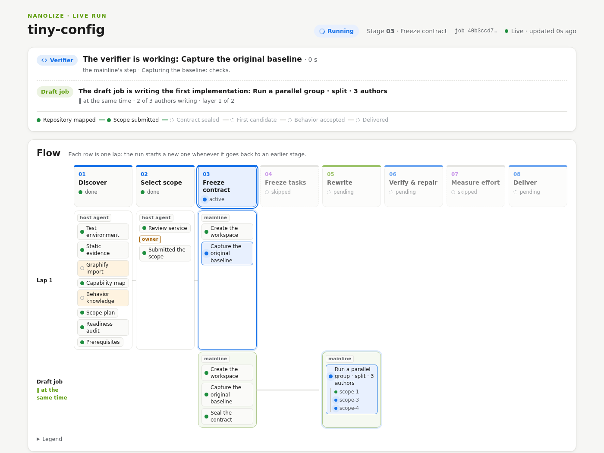
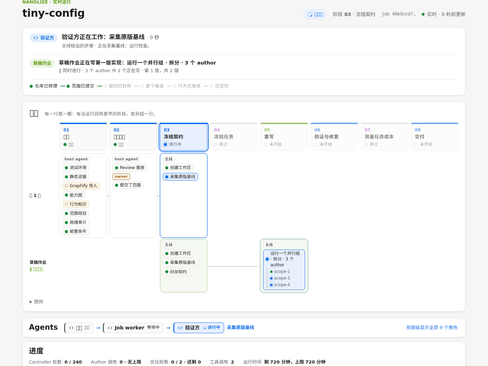
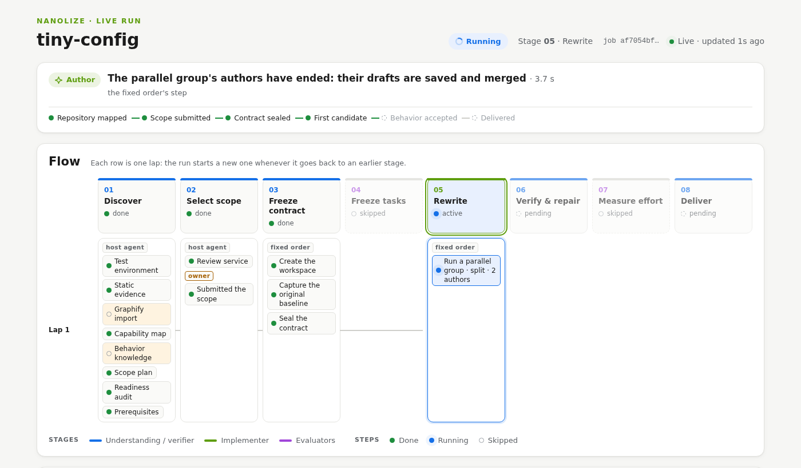
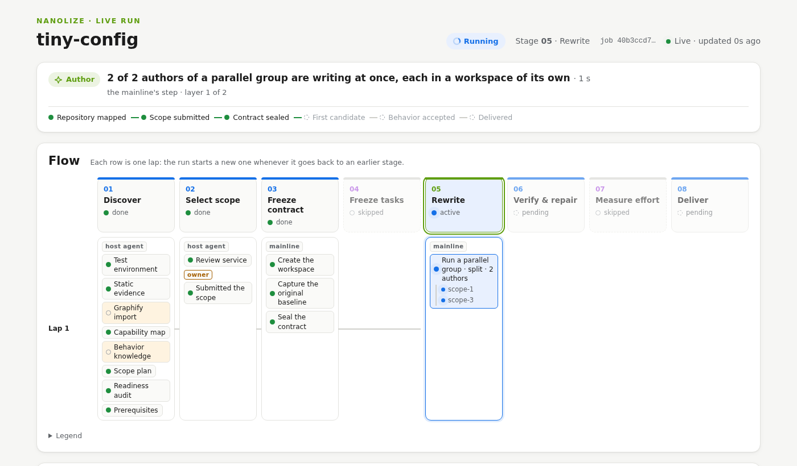
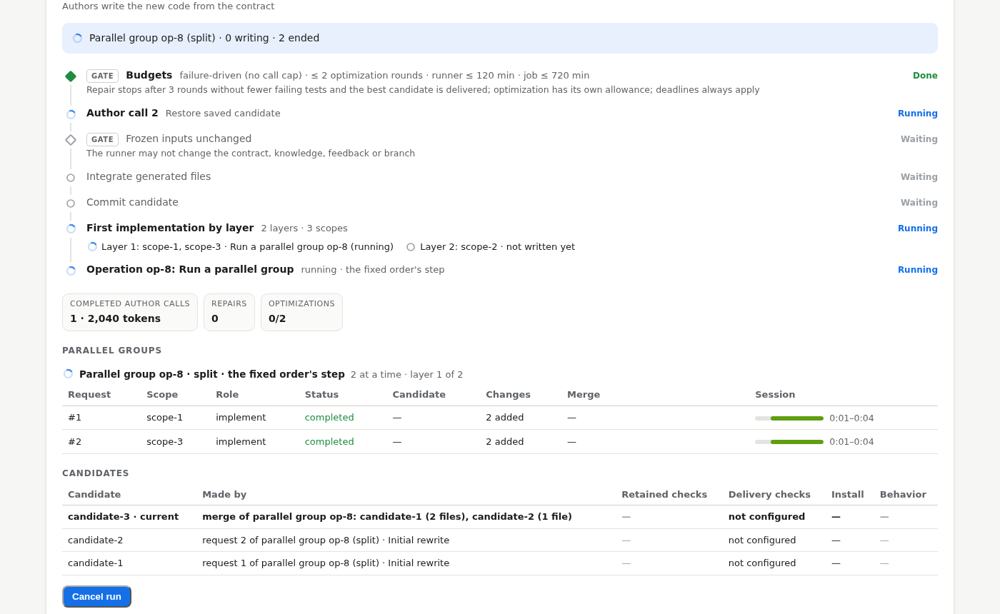
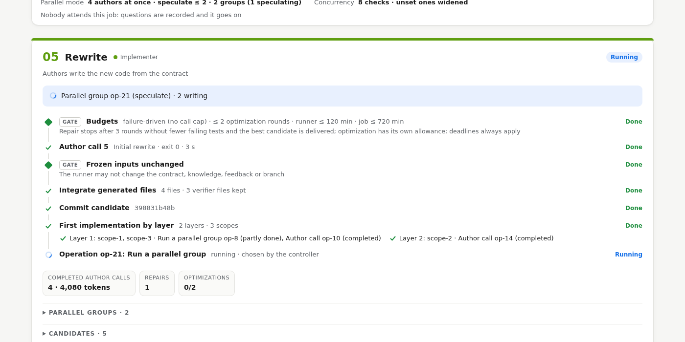

原页面已经跟上了 PR #43 的大部分内容，缺的是「同时进行」这件事：pair 的草稿作业没有画进流程，并行组在流程里只是一个格子。新分支补上了这两处，另外改了一处叫法，并把次要的表格折叠起来。版式、配色和各个区块都没有动。
分支 frontend-run-page（提交 adca250a，只在本地，未推送），基于 PR #43 的头部提交 7af748cb。截图是无头浏览器截的；pair 那两张用的是合成数据，下面有说明。全量测试里没有出现基线提交之外的失败。
| 对照项 | 原页面 | 现在 |
|---|---|---|
| pair 的草稿作业 | 只在阶段 05 的详情里有一行状态。主作业冻结契约时，草稿作业在写什么，流程和「现在」栏都看不到。 | 流程里在第 1 圈下面多一行，画在同样的阶段列里；「现在」栏多一句，说它正在写哪一步。 |
| 并行组 | 流程里是一个格子，只写「N 个 author」。每个 author 写哪个 scope、谁在写谁在等，要到详情的表格里看。 | 格子里逐个列出 author，上下叠放，各带一个状态点。speculate 的组按「版本 1、版本 2」列。 |
| 主线的叫法 | controller 作业里没有轮次选的步骤（冻结、第一版实现、第一次比较）标成「fixed order」，和 fixed 策略的作业一样。 | controller 作业里标成「mainline」，和页面上「Rn · mainline」的叫法一致；fixed 作业仍是「fixed order」。 |
| 当前进度 | 「现在」栏只说谁在做哪一步、是谁选的。 | 再加上这一步走到哪：正在写第几层；冻结里耗时长的步骤（采基线、设计测试）自己报告的进度。 |
| 阶段详情 | 并行组、各轮、候选版本、controller 各轮四张表全部展开。 | 四张表默认折叠，标题上带行数；打开过的保持打开。 |
| 图例 | 常驻在流程下面。 | 默认折叠。 |
| 演示页 | 并行场景的录制里没有每个 author 的状态。 | 并行场景重新录制了一遍；其余六个场景沿用原录制。 |
原页面已经有、没有改动的：八个阶段和按圈画的流程、里程碑、Agents、预算、每层的首次实现、并行组和候选版本的表格、功能图、每一步的活动列表。


这两张图用的是合成数据。主作业那一行来自真实录制，草稿作业那一行是按接口格式手工拼的。真实的 pair 要求主作业的检查在计算节点上跑，演示页的离线录制做不到，所以演示页里没有 pair 场景。草稿作业这一行的画法由单元测试覆盖，没有在真实的 pair 作业上看过。




页面读的 /api/run 只新增了两处，原有字段都没有改：
detail.authors：每个请求一项，按顺序给出它写的 scope、会话的 state（waiting、running、ended、unknown）和 author 的结束方式 status。draft 多了三个字段：steps（草稿作业的工具调用，格式和 flow.steps 的条目一样）、visits（它们走过的阶段）和 focus（正在跑的那一步的位置）。原有的 job_id、status、phase、message 不变，单个作业仍然没有 draft。前端新增了三个可以单独测试的函数：一个把并行组的 author 变成要画的行，一个生成草稿作业的那句话，一个按作业的策略决定叫「mainline」还是「fixed order」。流程里画一行的代码抽成了一个函数，主作业的圈和草稿作业的行共用。